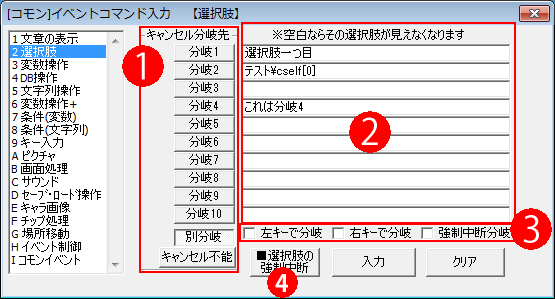
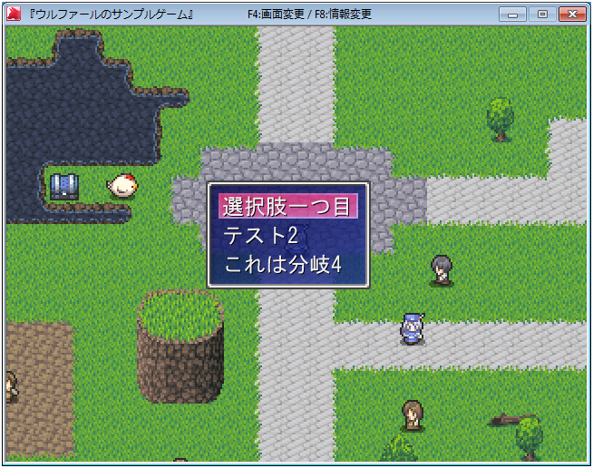

イベントコマンド 【選択肢】
最大10択までの選択肢を表示し、プレイヤーに入力をうながします。

【注意！】
・選択肢の文章は内部的には繋がっているため、選択肢内で\f[20]（フォントサイズ変更）や<C>（中央寄せ）などの書式変更をすると、それ以降の選択肢にもその文字サイズや書式が反映されます。注意して下さい。
【各部の説明】
１．キャンセル時の分岐先
選択肢中にキャンセルキーを押したときの分岐先です。「別分岐」はキャンセル専用時の処理を行い、「キャンセル不能」にするとキャンセルキーを押してもキャンセルできません。
２．選択肢入力欄
選択肢の内容を入力します。空欄にするとその欄はゲーム中では選択できません。この欄に\s[?]や\v[?]（?=数値）といった特殊文字を使用することもできます。
※Shiftを押しながらクリックすると、入力後のコマンド一覧側のカーソルが「選択肢の後ろ」に移動します。 (Ver3.582以降)
何も押さずに入力すると「最初の選択肢」内にカーソルが移動します。
３．左キーで分岐 / 右キーで分岐 / 強制中断分岐
「左/右キーで分岐」に関しては、このチェックをオンにしていると、選択肢の表示中にそのキーを入れたとき、専用の分岐に飛びます。キャンセルを押したときの分岐の左/右バージョンと考えてください。
「強制中断分岐」は、下の「■選択肢の強制中断」が行われたときの分岐先を設定できます。
４．■選択肢の強制中断
表示中の選択肢を強制的に終了させます。この「■選択肢の強制中断」コマンドは別の並列イベントから実行する必要があります。使い道としては、制限時間付きのクイズなどが挙げられます。
【選択肢の使用例】

選択肢は、選択肢用の画像を設定していれば自動でウィンドウが表示されます。
【特殊機能の説明】
・文字列が空白なら、その選択肢が消去される
文字列欄に何も書かなかった場合は、ゲーム内でその選択肢が行ごと表示されなくなり、選択できなくなります。これは\s[?]（?番の文字列を表示する）などの特殊文字を処理した結果で空白となった場合でも同様で、うまく使えば選択肢表示のオンオフの切り替えが可能となっています。